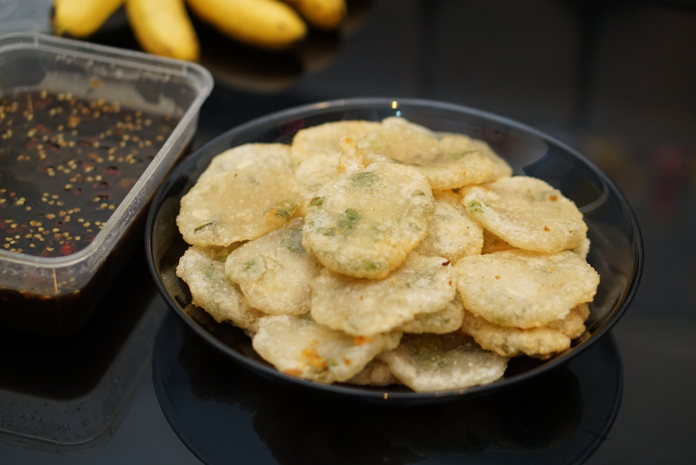
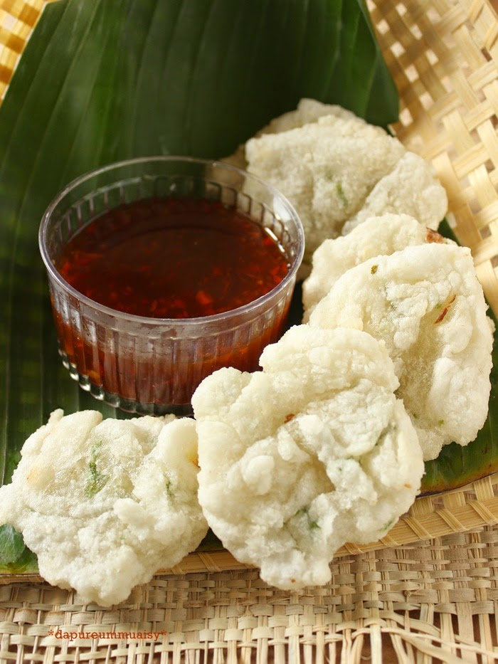

Rujak Cireng

Cireng merupakan singkatan dari aci goreng. Makanan renyah ini berasal dari Sunda. Cara membuatnya adalah dengan menggoreng campuran berbagai bahan dengan bahan utamanya, yaitu tepung kanji. Umumnya, bahan makanan lain yang digunakan adalah
garam, merica, penyedap rasa, daun bawang, tepung terigu, bawang putih, kedelai, dan minyak goreng.
Cireng sudah terkenal sejak tahun 80-an. Ketika itu, sudah banyak pedagang cireng yang menjual dagangan mereka dengan sepeda. Bahkan, di belakang sepedanya terdapat peralatan untuk membuat cireng. Cireng pun nggak hanya terkenal di kalangan orang Sunda,
tapi juga terkenal di seluruh Indonesia.
Bahkan, sudah banyak orang yang melakukan inovasi pada cireng. Bentuk cireng kini bukan hanya bulat, tapi bisa kotak, hati, dan lain-lain. Dan isi cireng pun sudah beragam, mulai dari keju, cornet, daging, sosis, bakso, teriyaki, dan lain-lain.
Cireng yang original aja sudah enak banget, apalagi yang pakai isi.
Bahan-bahan untuk membuat rujak cireng:
- tepung tapioka 150 gr,
- tepung terigu 200 gram,
- bawang putih dihaluskan sebanyak ½ sdt,
- daun bawang segar diiris tipis,
- daun seledri yang diiris tipis,
- air panas,
- garam secukupnya,
- merica bubuk,
- kaldu ayam,
- ebi.
Kuah:
- gula merah,
- air asam jawa 1 sdm,
- garam secukupnya,
- kacang tanah digoreng,
- cabe rawit merah,
- air matang hangat.
Cara membuat rujak cireng :
- Campurkan semua bahan cireng ke dalam baskom, lalu aduk hingga rata. Selanjutnya masukkan air sedikit demi sedikit. Buat adonan hingga rata dan menjadi adonan yang kalis.
- Setelah menjadi adonan kalis, bentuk-bentuk menjadi bulat dan sedikit dipipihkan.
- Goreng bulatan pipih ini hingga kuning kecoklatan warnanya. Jangan gunakan api yang terlalu besar. Api sedang akan membuat masaknya merata.
- Masukkan semua bahan ke dalam cobek lalu ulek hingga halus.
- Setelah halus masukkan air hangat ke dalam bumbu tersebut dan campur hingga rata.
- Tuang bumbu rujak diatas cireng goreng yang telah Anda buat dan campur dengan sedikit cuka.
- Makanan siap disantap.
Jika anda tidak ingin ribet membuat sendiri, anda bisa membelinya saja di toko-toko cemilan terdekat dengan kkisaran harga ± Rp 12.000
Lokasi penjual Rujak cireng di kota Bandung.